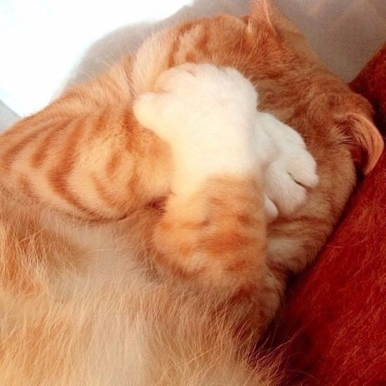
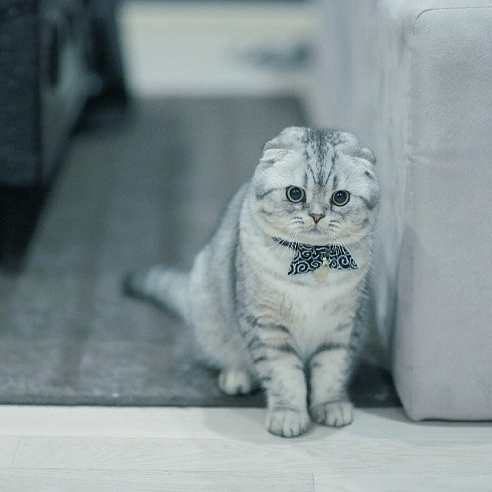
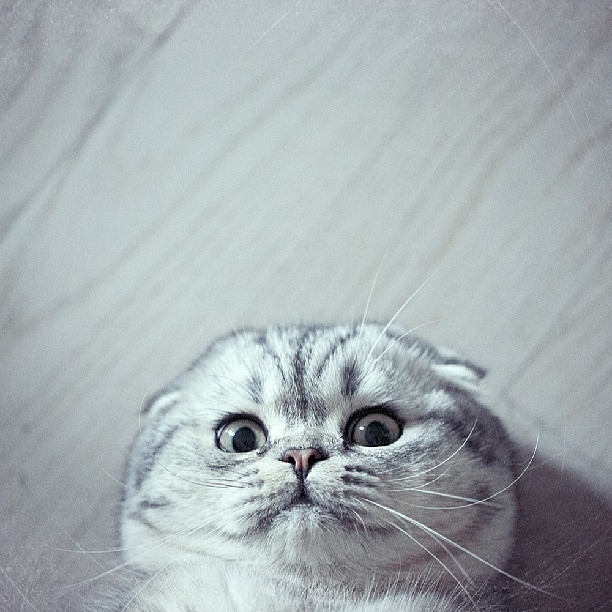

Aren`t they awesome?Domestic cats use many vocalizations for communication, including purring, trilling, hissing, growling/snarling, grunting, and several different forms of meowing.[7] By contrast, feral cats are generally silent.[142]:208 Their types of body language, including position of ears and tail, relaxation of the whole body, and kneading of the paws, are all indicators of mood. The tail and ears are particularly important social signal mechanisms in cats;[143][144] for example, a raised tail acts as a friendly greeting, and flattened ears indicates hostility. Tail-raising also indicates the cat's position in the group's social hierarchy, with dominant individuals raising their tails less often than subordinate animals.[144] Nose-to-nose touching is also a common greeting and may be followed by social grooming, which is solicited by one of the cats raising and tilting its head.
Also you can watch this amazing YouTube video about cats!